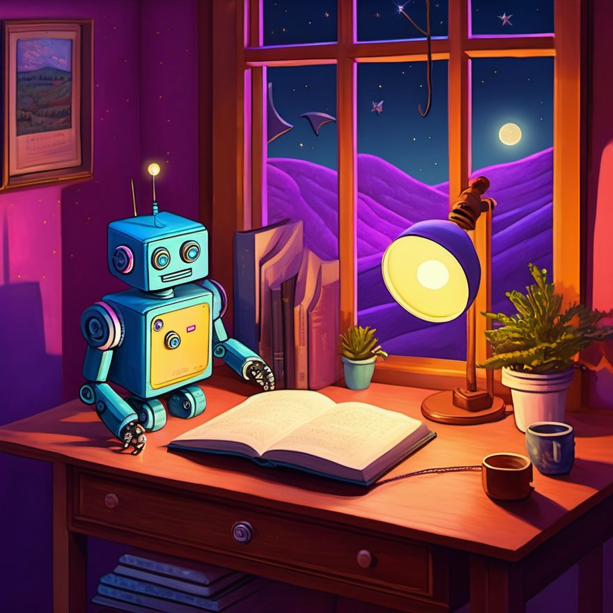
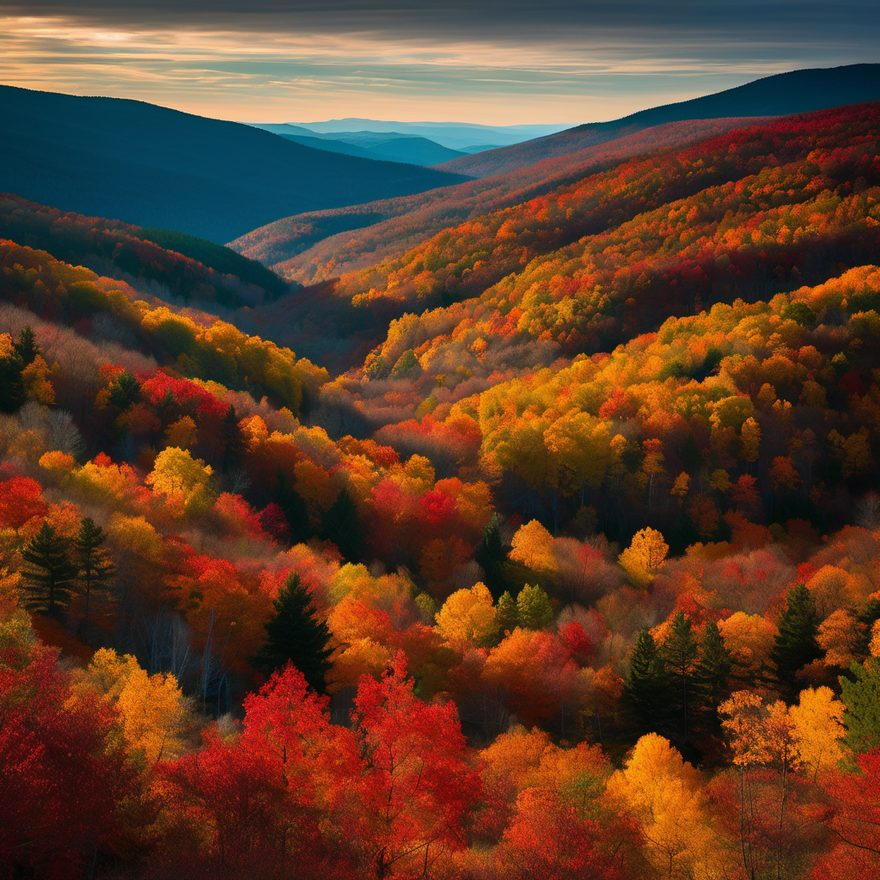
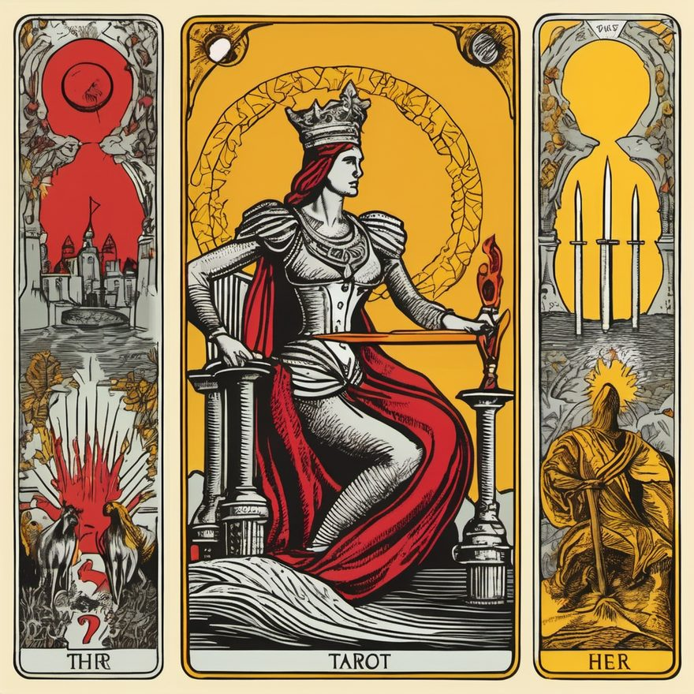
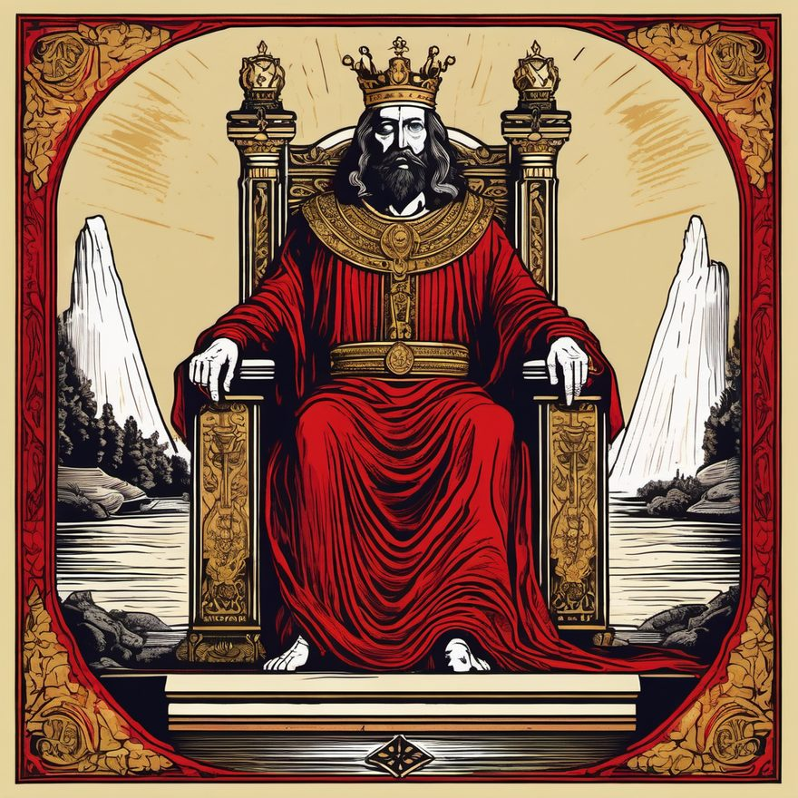

Ph3b3
Made with Soul
A lamp in your own house — to make sure it isn't haunted.
Ph3b3 (Phoebe) is a fully local AI assistant. She runs on hardware you already own and already power — no cloud, no data centers, no API calls leaving your network. You talk to her by text or by voice, and every word stays inside your walls.
Privacy here is architecture, not a policy page. A cloud assistant asks you to trust a promise. Ph3b3 removes the wire the data would travel on.
Made by her




Generated locally on the machine described above. No cloud render.